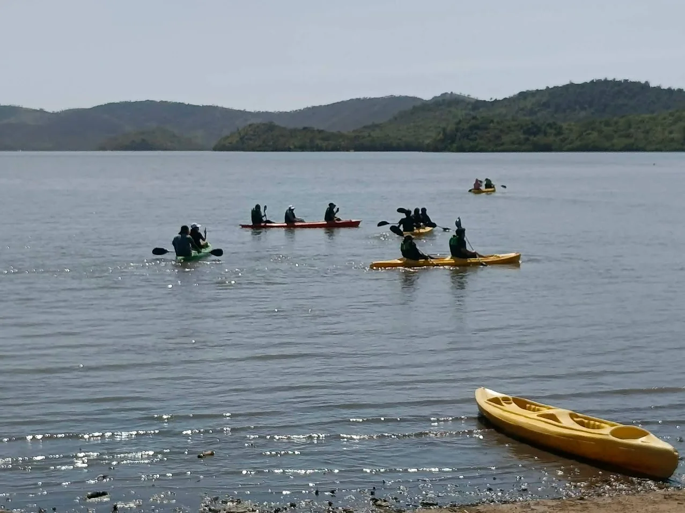
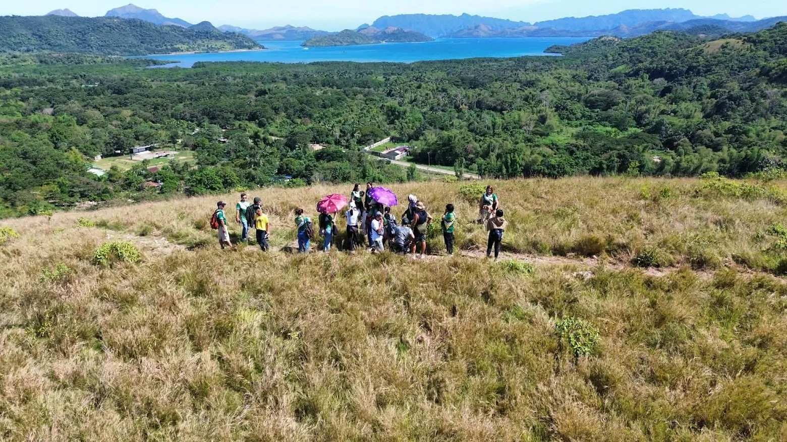
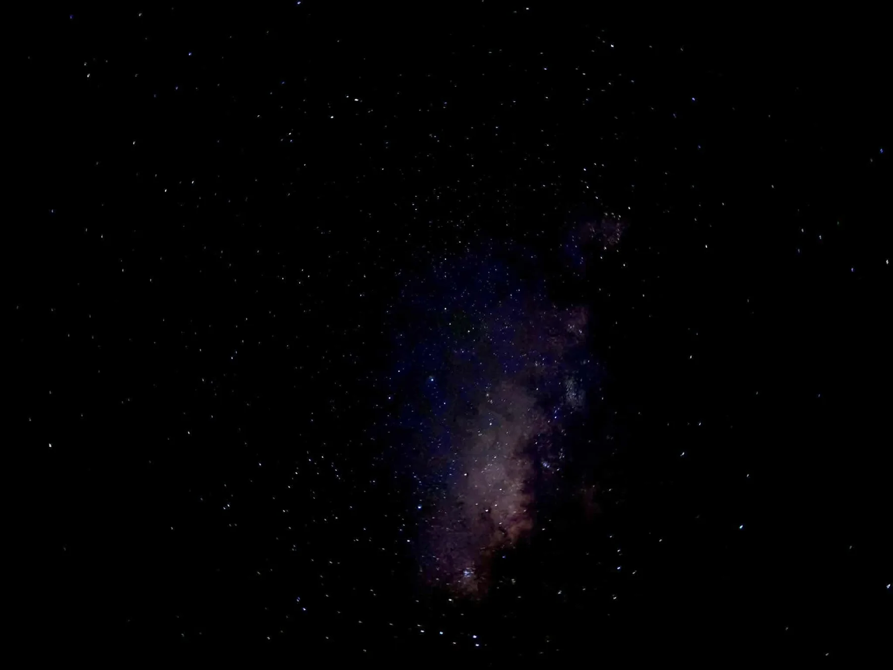

01 DAY
1 PM
9 PM
DRAG THE LIGHT
DAYLIGHT
YOUR VISIT AT A GLANCE
Nature by day.
Nature by day.
Wonder by night.
- LOCATION
- Coron, Palawan Calamianes, Philippines
- OPEN DAILY
- 1:00 PM — 9:00 PM Current September 2026 hours
- EXPERIENCE
- Day + Night Mangroves, fireflies & more
- RESERVATIONS
- Book Online Secure checkout planned for launch
CHOOSE YOUR EXPERIENCE
Find your way
Find your way
into the wild.
Start in the mangroves, stay for the evening, or experience the park across daylight and night. Current rates below are per person.
A LIVING MANGROVE LANDSCAPE
DISCOVER THE WILD SIDE
The experience begins with the place itself.
Kingfisher Park is presented first as a living landscape — water, mangroves, forest edges and wildlife — with visitor experiences designed around the character of the place.
01
MANGROVES
Waterways and mangrove edges shape the visual identity of the park.
02
BIODIVERSITY
The official Kingfisher Park identity describes the site as a Biodiversity Haven.
03
DAY → NIGHT
The website journey follows the park from daylight nature experiences into the evening.

BIODIVERSITY HAVEN
A glimpse of the life around the park.
The homepage offers only a preview. The dedicated Biodiversity page gives the Kingfisher Park archive more room while species details and photo information are verified.
EXPLORE BIODIVERSITY


AFTER DARK
VIEW NIGHT EXPERIENCES
When daylight fades, the park reveals a quieter side.
Firefly viewing, nighttime kayaking and bioluminescent plankton are part of Kingfisher Park's current evening experience. What visitors see can vary with weather, wind, tide, moonlight and natural conditions.
FIREFLIES ABOVE
Natural sightings vary.
BIOLUMINESCENCE BELOW
Visibility depends on conditions.

DAYLIGHT
GOLDEN HOUR
AFTER DARK
BOOK KINGFISHER PARK
From choosing an experience to a confirmed visit.
The final site will let visitors select an experience, choose an available date and time, enter guest details, review the total and complete secure online payment.
START BOOKING- 01 EXPERIENCE Choose what you want to do.
- 02 DATE & TIME Select from confirmed availability.
- 03 GUESTS Add guest and contact details.
- 04 SECURE PAYMENT Complete payment in the final Wix site.
INTERACTIVE VS CODE PROTOTYPE · NO REAL PAYMENT IS PROCESSED HERE